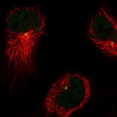
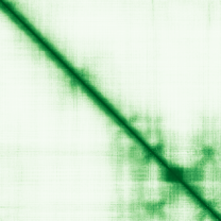
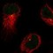

type: protein-evaluation gene: "CDIP1" date: 2026-05-31 tags: [protein-scout, nucleus-cytoplasm, evaluation] status: scored ---
CDIP1 核蛋白评估报告
1. 基本信息
| 项目 | 内容 |
|---|---|
| 基因名 / 别名 | CDIP1 / C16orf5, CDIP, LITAFL |
| 蛋白全名 | Cell death-inducing p53-target protein 1 |
| 蛋白大小 | 208 aa / 21.9 kDa |
| UniProt ID | Q9H305 |
2. 评分总览
| 维度 | 得分 | 新权重 | 加权后 | 关键证据摘要 |
|---|---|---|---|---|
| 核定位特异性 | 4/10 | ×4 | 16.0 | 初级定位 Late endosome/Lysosome membrane; GO nucleus IDA:MGI (鼠源) |
| 蛋白大小 | 8/10 | ×1 | 8.0 | 208 aa, 21.9 kDa，小型蛋白 |
| 研究新颖性 | 10/10 | ×5 | 50.0 | Strict=11 |
| 三维结构 | 2/10 | ×3 | 6.0 | 无 PDB; pLDDT 55.3（较低，0% >90） |
| 调控结构域 | 3/10 | ×2 | 6.0 | LITAF domain (IPR006629, IPR037519), PF10601 |
| PPI 网络 | 7/10 | ×3 | 21.0 | STRING BCAP31/DESI1; IntAct 多重互作; UniProt 12 个互作 |
| 加权总分 | 107/180** | |||
| 互证加分 | +0.0 | 核定位仅 GO IDA:MGI（鼠源推断），人类无实验核定位证据 | ||
| 归一化总分 (÷1.83) | 58.5/100** |
PubMed strict: 11
3. 详细分析
3.1 核定位证据
| 来源 | 定位 | 可信度 |
|---|---|---|
| UniProt | Late endosome membrane (ECO:0000269); Lysosome membrane (ECO:0000269) | 实验证据（初级定位） |
| GO-CC | cytoplasmic side of late endosome membrane (IDA); cytoplasmic side of lysosomal membrane (IDA); nucleus (IDA:MGI) | 核定位仅为鼠源 IDA |
| HPA (IF) | 有 IF 缩略图，原图未取得 | 间接支持 |
HPA IF 状态: IF thumbnail only — HPA 暂无 IF 原图，仅获取到 60x60 缩略图，不能作为可靠定位证据。核定位基于 UniProt + GO-CC。 
结论: CDIP1 的核定位置信度低。UniProt Subcellular Location 完全未提 nucleus，而明确指向 late endosome/lysosome membrane。GO-CC 中的 nucleus IDA 标注为 MGI（Mouse Genome Informatics），即来自鼠同源基因的实验数据。作为核候选不可靠，但 p53 靶基因的属性保留一定关注价值。
3.2 结构与结构域
| 指标 | 数值 |
|---|---|
| AlphaFold | AF-Q9H305-F1 |
| 平均 pLDDT | 55.3 |
| pLDDT >90 | 0.0% |
| pLDDT 70-90 | 3.4% |
| pLDDT 50-70 | 71.6% |
| pLDDT <50 | 25.0% |
| PDB | 无 |
| InterPro | IPR006629 (LITAF domain), IPR037519 (CDIP1/LITAF family) |
| Pfam | PF10601 |

pLDDT 偏低（均值 55.3），0% 残基 >90，71.6% 在 50-70 区间。无 PDB 实验结构。结构域为 LITAF 家族（与 CDIP1 共享），提示参与膜曲率感知和内体分选。
3.3 研究现状
| 指标 | 数值 |
|---|---|
| PubMed strict (Title/Abstract) | 11 |
| PubMed broad | 26 |
| 别名 | C16orf5, CDIP, LITAFL（未用于 scoring） |
关键文献：
- PMID:34342350 — "Endosomal recycling tubule scission and integrin recycling involve the membrane curvature-supporting protein LITAF" (J Cell Sci, 2021)
- PMID:33503978 — "The Novel ALG-2 Target Protein CDIP1 Promotes Cell Death by Interacting with ESCRT-I and VAPA/B" (Int J Mol Sci, 2021)
- PMID:38928226 — "Cytoprotective Role of Autophagy in CDIP1 Expression-Induced Apoptosis in MCF-7 Breast Cancer Cells" (Int J Mol Sci, 2024)
- PMID:24139803 — "CDIP1-BAP31 complex transduces apoptotic signals from ER to mitochondria under ER stress" (Cell Rep, 2013)
功能聚焦于 p53 介导的凋亡、内体分选和 ER 应激信号。研究量低，但不是核蛋白功能。
3.4 PPI 网络（三源综合）
| Partner | Source | Score/Evidence | Relevance |
|---|---|---|---|
| BCAP31 | STRING | 0.943 (textmining) | ER 膜蛋白，凋亡信号传递 |
| DESI1 | STRING | 0.591 (exp 0.591) | Deubiquitinase，实验支持 |
| FANCM | STRING | 0.532 (exp 0.528) | DNA repair，实验支持 |
| ITCH | STRING | 0.486 (textmining) | E3 ligase，泛素化 |
| NEDD4 | STRING | 0.485 (textmining) | E3 ligase，泛素化 |
| DESI1 | IntAct | two hybrid array (PMID:32296183) | Deubiquitinase |
| DCUN1D1 | IntAct | validated two hybrid (PMID:32296183) | Neddylation E3 |
| OTUD7B | IntAct | two hybrid array (PMID:32296183) | Deubiquitinase |
| DCUN1D1 | UniProt | 3 experiments | Neddylation E3 |
| DESI1 | UniProt | 4 experiments | Deubiquitinase |
| EPN2 | UniProt | 3 experiments | Epsin-2，内吞 |
| TOLLIP | UniProt | 3 experiments | Toll-interacting protein |
| UBQLN1 | UniProt | 3 experiments | Ubiquilin-1 |
| UBQLN2 | UniProt | 3 experiments | Ubiquilin-2 |
| UBB | UniProt | 3 experiments | Ubiquitin B |
| UBC | UniProt | 3 experiments | Ubiquitin C |
PPI 网络丰富：STRING 连接 BCAP31（凋亡）、DESI1（去泛素化酶）、FANCM（DNA 修复）；IntAct 和 UniProt 记录多个去泛素化酶（DESI1, OTUD7B）、泛素通路（UBB, UBC, UBQLN1/2）和内吞因子（EPN2）。PPI 指向内体/溶酶体泛素化调控和凋亡信号，不涉及染色质或核复合体。
4. 总体评价
CDIP1 是一个 p53 靶基因编码的小型内体/溶酶体膜蛋白，功能明确指向凋亡和内体分选。核定位证据薄弱（仅 GO IDA:MGI 鼠源推断，UniProt Subcellular Location 完全不支持核定位）。PPI 网络丰富但均为内体/泛素通路相关。归一化总分 58.5/100。不建议作为核-胞质蛋白候选——其功能定位在膜系统，核定位可能为假阳性或间接现象。
5. 数据来源
- UniProt: https://www.uniprot.org/uniprotkb/Q9H305
- AlphaFold: https://alphafold.ebi.ac.uk/entry/Q9H305
- PubMed: https://pubmed.ncbi.nlm.nih.gov/?term=CDIP1
- Protein Atlas: https://www.proteinatlas.org/search/CDIP1（IF 缩略图）

HPA IF 图像已本地嵌入。